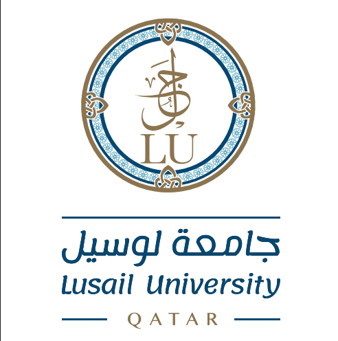
منصة أكاديمية سيادية موحدة تدمج كافة الخدمات الأكاديمية وشؤون الطلاب للكليات الـ 4 والبرامج الـ 17 المعتمدة، مع أتمتة 16 خدمة ذاتية بالـ QR Code ولوحة تحكم مركزية للمسجل العام.
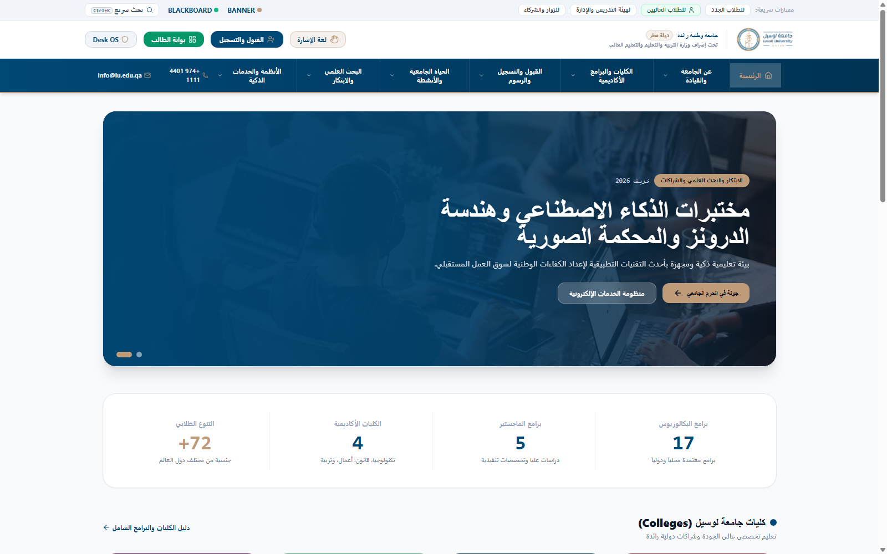
21 صفحة تخصصية متصلة بهوية واحدة متكاملة دون أي روابط مكسورة، مع قائمة ملاحة ذكية وتوافق تام مع الهواتف.
تغطية شاملة لـ 4 كليات أكاديمية (القانون، تكنولوجيا المعلومات، التجارة، التربية) ومرافق تطبيقية كالمحكمة الصورية ومختبر SOC.
أتمتة كاملة لإصدار إفادات القيد، كشوف الدرجات، وتأجيل الفصول بالختم الرقمي والتحقق الفوري المشفر.
نظام تشغيل مركزي لإدارة القيود الأكاديمية (Holds)، رصد الدرجات، كشوف الحرمان، ومحرك احتساب الـ GPA 4.00.
الكحلي الملكي (#004876) والذهبي (#be9c79) مع خطوط عربية فائقة الوضوح (Cairo & Tajawal) تطبق لأول مرة بتناسق كامل.
تدقيق شامل لكافة المسارات وقائمة ملاحة ذكية موحدة (Navigation Hub) تضمن انتقال سلس وبلا انقطاع.
تصميم متجاوب بالكامل يتكيف مع الهواتف الذكية والأجهزة اللوحية وشاشات العرض الكبيرة.
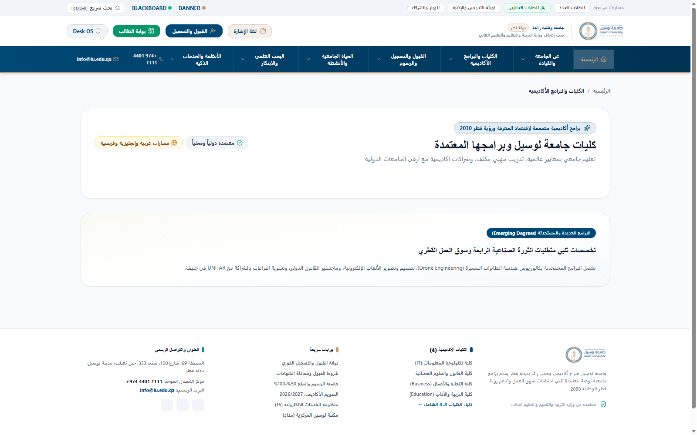
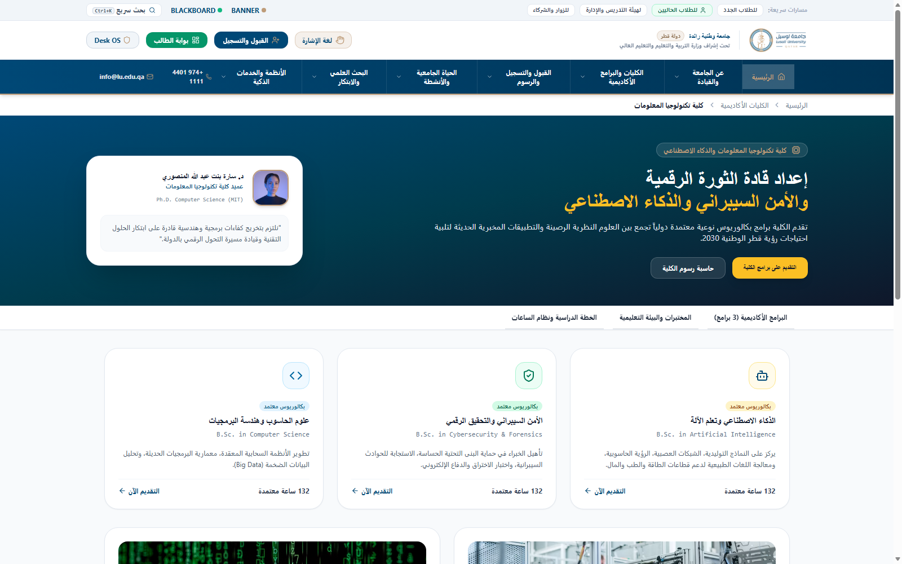
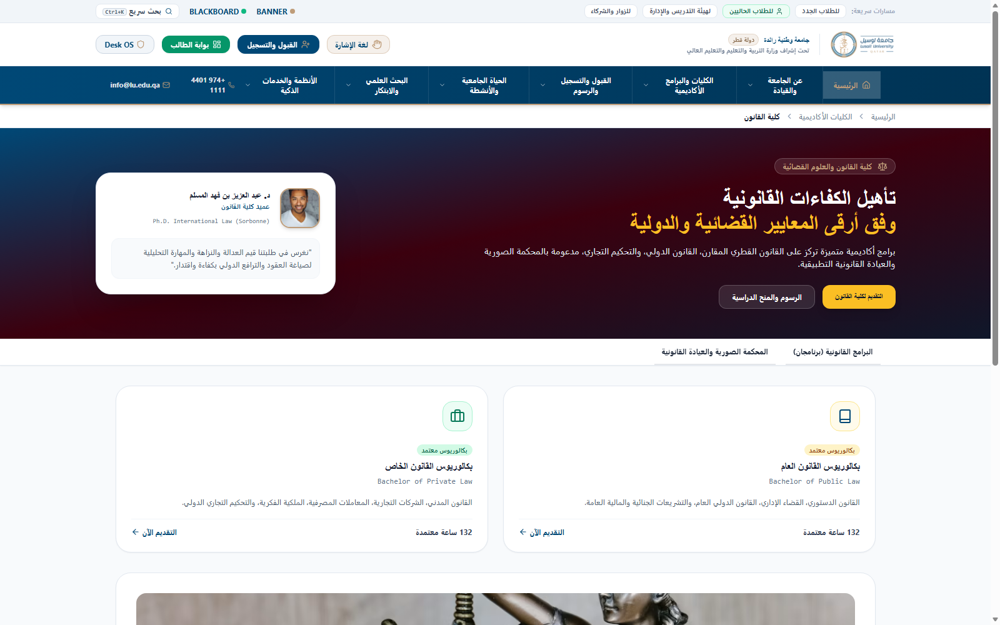
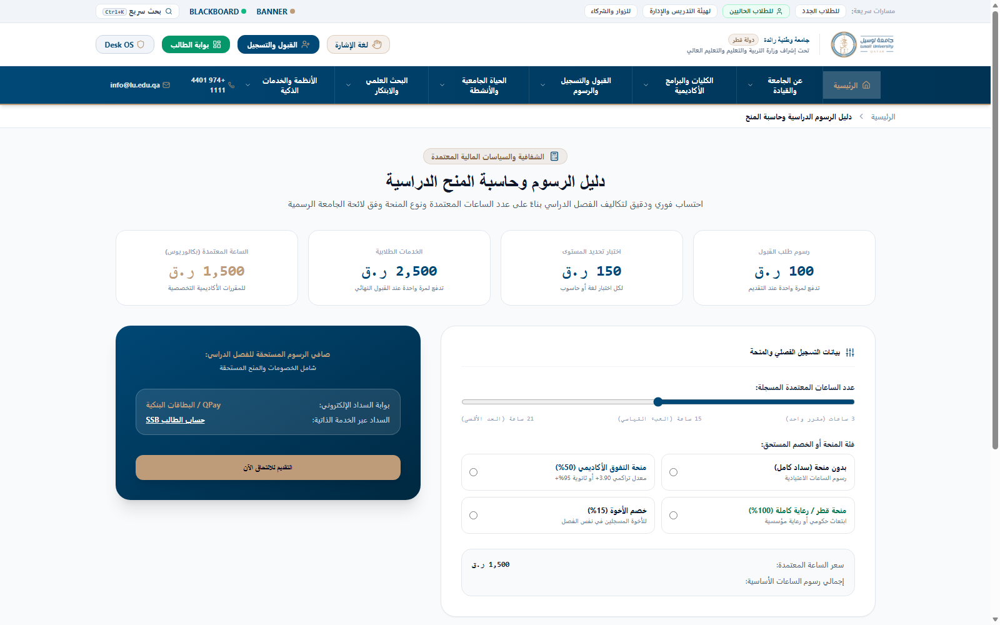
عرض متطلبات الثانوية القطرية (65%/70%) والبريطانية IGCSE واختبارات اللغة (IELTS 5.5).
حساب فوري لتكلفة الساعات بحسب الكلية وتطبيق منح التفوق الأكاديمي (50% و 100%).
نموذج تقديم ميسر مع رفع البطاقة الشخصية والشهادات الرسمية إلكترونياً.
تدقيق آلي للمستندات والتوجيه لوسائل السداد الرسمية المعتمدة بالحرم الجامعي.
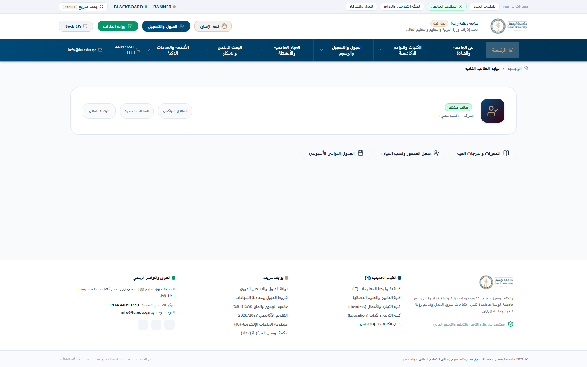
متابعة مواعيد المحاضرات، أسماء الأساتذة، والقاعات الذكية مع تحديثات مستمرة.
رصد دقيق لنسب الحضور مع تنبيه تلقائي عند بلوغ نسبة الغياب 10% قبل الحرمان الأكاديمي.
استعراض الدرجات الفصلية والتراكمية وحساب المعدل التراكمي بدقة 4.00 والبطاقة الجامعية.
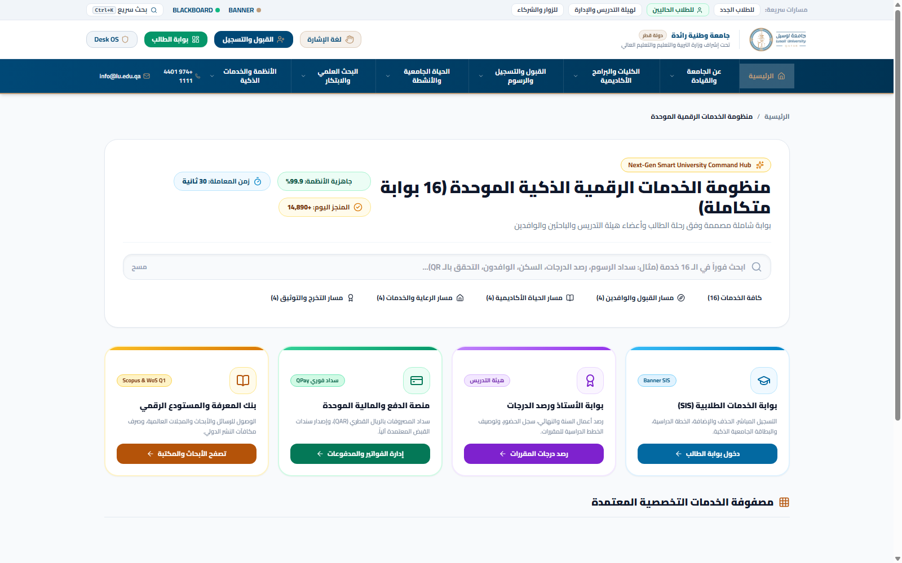
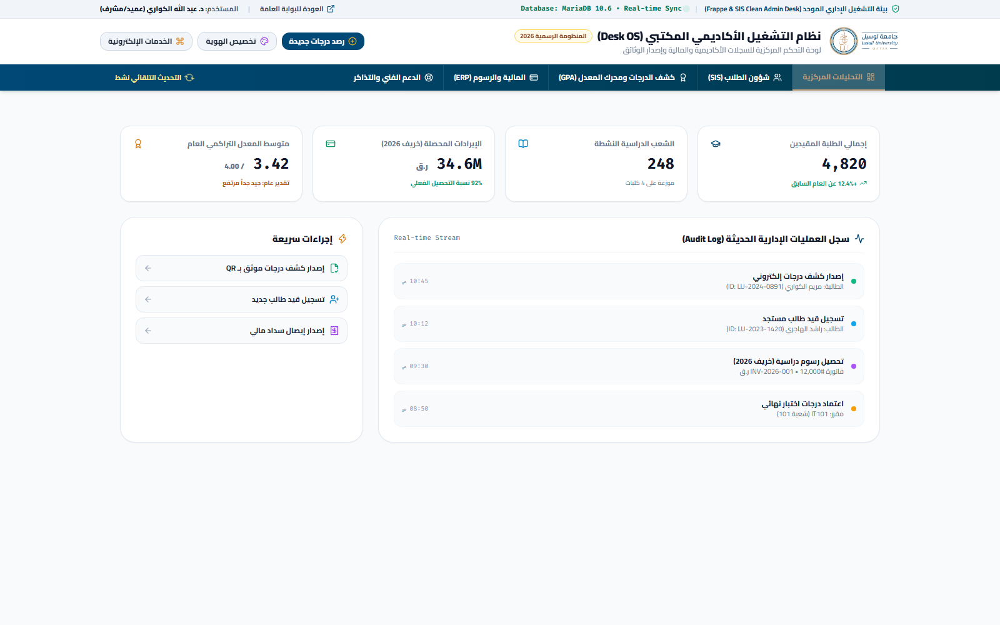
تطبيق ورفع الحظر الأكاديمي والإداري فورياً وحجب التسجيل أو إخراج السجل الأكاديمي بدقة.
معالجة التقديرات والدرجات النهائية واحتساب مراتب الشرف وقواعد الإعادة تلقائياً.
فحص استيفاء الخطة الدراسية (120-132 ساعة) واعتماد السجلات المصدقة.
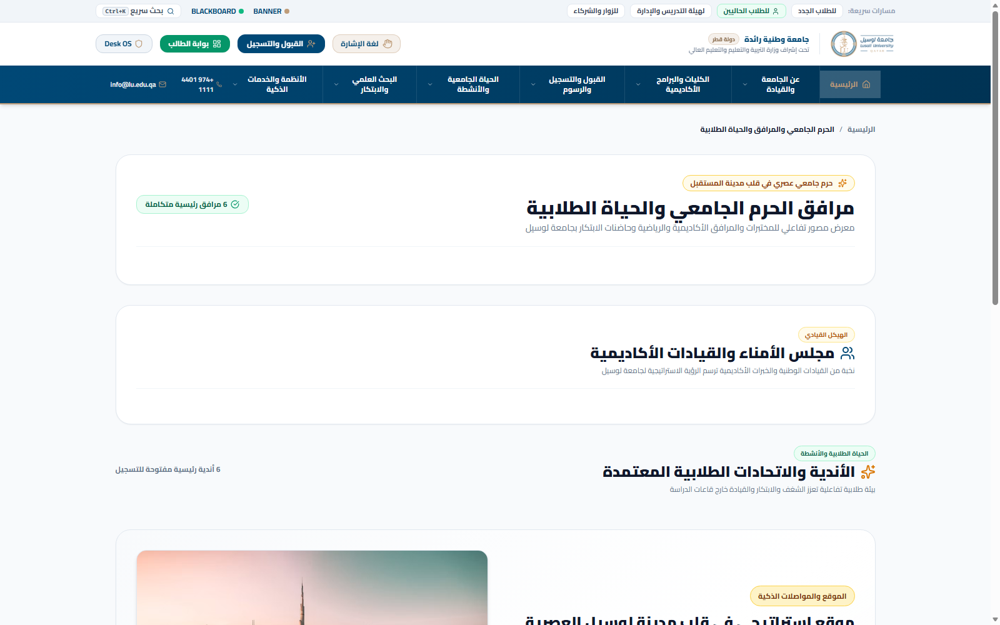
نادي المناظرات، نادي الذكاء الاصطناعي، العيادة القانونية، وأندية الفنون والبيئة.
فهرس رقمي متطور (مداد)، قواعد بيانات عالمية (IEEE ودار المنظومة)، وحجز قاعات البحث.
دوري الجامعات القطرية وبطولات رياضية وشراكات خصومات خاصة للياقة البدنية (Strive & Perf Up).
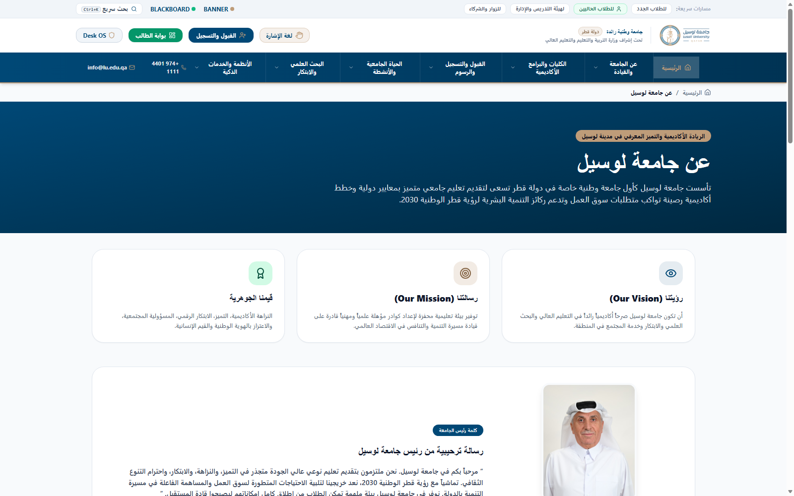
توجيه استراتيجي لدعم ركيزة التنمية البشرية وفق رؤية قطر الوطنية 2030 وتوفير أفضل بيئة تعليمية.
تطبيق أعلى معايير الجودة والاعتماد الأكاديمي وشراكات دولية مع جامعة السوربون، ساسكس، و UNITAR.
إصدار مجلة لوسيل للدراسات المحكمة وصندوق دعم البحوث والابتكارات الطلابية.
بوابة الطالب، لوحة Desk OS، وصفحات الكليات التخصصية (HTML5 / Modern JS / Tailwind / Fully Responsive).
توليد فوري للوثائق الأكاديمية مع ختم رقمي مشفر غير قابل للتزوير للتحقق المباشر بدون تدخل بشري.
احتساب الـ GPA بدقة 4.00 ومعالجة الساعات المعتمدة وتطبيق قيود الحرمان والإنذارات الأكاديمية آلياً.
صلاحيات وصول محددة (RBAC)، استضافة محلية آمنة، والتوافق التام مع تشريعات خصوصية البيانات القطرية (PDPPL).
بدلاً من 3 إلى 4 أيام عمل ومراجعات ورقية سابقة
محرك برمجي يلغي الخطأ البشري تماماً
صفر روابط مكسورة أو معطلة في المنظومة
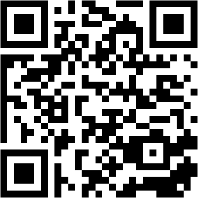